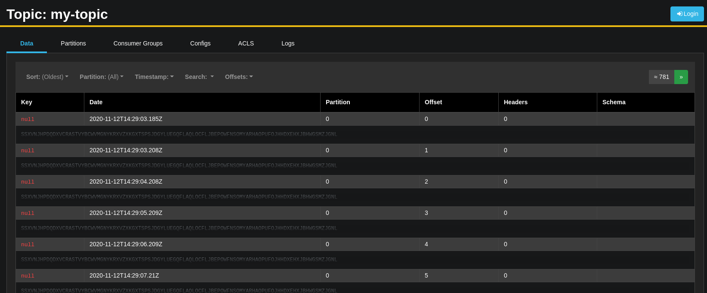

# Off-the-shelf tools
Some tools exist to help you get to your goal, which is to monitor and manage your Apache Kafka cluster. Let's see some of them!
For each of these tools, you can take some time to play around it and discover its features.
# Confluent Control Center
Confluent Control Center is a web application built to manage and monitor Apache Kafka. This software is being distributed and maintained by Confluent.
Confluent Control Center is part of the Confluent Platform Enterprise offer.
You can check all of it available features on Confluent documentation.
# Configuration
# Broker
To enable metrics reporting to Confluent Center from your brokers, these two properties have to be put in server.properties file.
metric.reporters=io.confluent.metrics.reporter.ConfluentMetricsReporter
confluent.metrics.reporter.bootstrap.servers=broker1:9092,broker2:9092,broker3:9092
# Client
To enable metric reporting from you clients, producers or consumers, this property is needed in your client configuration:
settings.put(ConsumerConfig.INTERCEPTOR_CLASSES_CONFIG, List.of(MonitoringConsumerInterceptor.class));
For this workshop, the kafka-cluster.yml file is already configured for you:
KAFKA_METRIC_REPORTERS: "io.confluent.metrics.reporter.ConfluentMetricsReporter"
CONFLUENT_METRICS_REPORTER_BOOTSTRAP_SERVERS: "kafka-1:9092,kafka-2:9092,kafka-3:9092"
Let's start Confluent Control Center.
docker-compose -f control-center.yml up -d
Once it' started, which can take some time, you can visit http://localhost:9021
# AKHQ

AKHQ (previously known as KafkaHQ) is a tool to manage your Apache Kafka Cluster. It's free and open source, following the Apache-2.0 License. It enables you to monitor your cluster, browse topic data, manage consumer groups and many more.
You can find more information on its Github page
Let's run it!
docker-compose -f akhq.yml up -d
Once AKHQ is started, you can go to http://localhost:8080.
# Kafka Eagle
Kafka Eagle is another tool to manage your Apache Kafka Cluster. It's also free, and open source under the Apache-2.0 License. It enables you to monitor your cluster, browse topic data, manage consumer groups and many more.
You can find more information on its Github page
Let's start it!
docker-compose -f kafka-eagle.yml up -d
Once Kafka Eagle is started, you can visit http://localhost:8048/ke/ and log in as admin 12356.